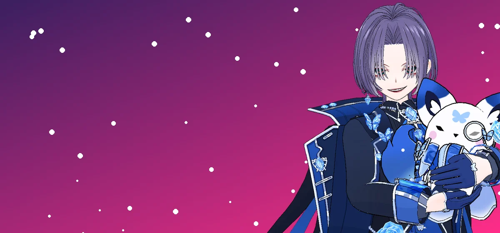

SAKIYA OFFICIAL ROOM
八乙女さきや
タップではじめる

 うさぎ、ゴリラを殴る。3D
うさぎ、ゴリラを殴る。3D
 ちょうどいい湯かげん
ちょうどいい湯かげん
 カニ飛ばし
カニ飛ばし
 EBI KANI?
EBI KANI?
 童話キャラ16タイプ診断
カニ飛ばし
童話キャラ16タイプ診断
カニ飛ばし

ミラティブ配信者。ゲーム・曲・動画を全部ひとりで作って、配信と投稿をしている。
送ってくれたメッセージは、内容を確認してからここに飾られます。すぐには表示されません。
まだメッセージはありません。最初の一通を送ってみてね。
今日の日付を確認中…
毎日0時に切り替わります。7日連続で特別報酬、ポイントは100ごとに称号が上がります。この端末にだけ記録されます。